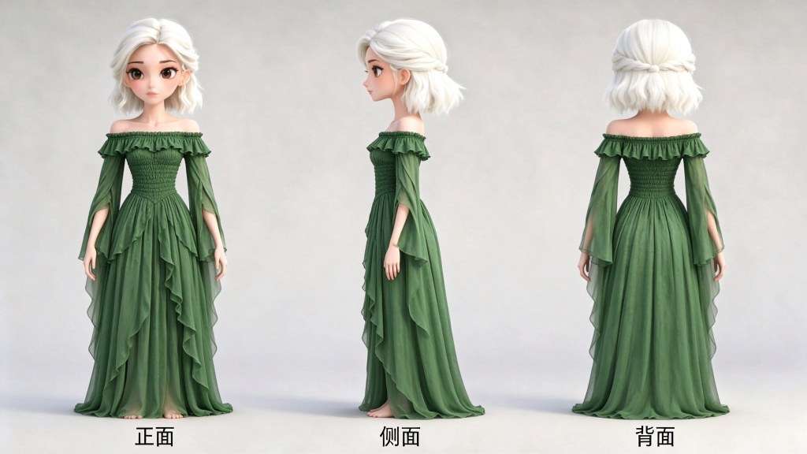

图片、视频，一个工作台
从画布发起图片或视频生成。任务在后台执行，完成后自动回到画布，方便接着整理与创作。
一个轻巧的 Windows 桌面工作台，把豆包画布里的图片与视频创作串联起来。从人物参考到生成结果，都能在一张画布中清晰衔接。

从灵感到成片，让参考素材、生成节点和最终结果自然连在一起。
从画布发起图片或视频生成。任务在后台执行，完成后自动回到画布，方便接着整理与创作。
把两张人物卡连接到图片生成节点，为双人合影、封面和海报提供同框参考。
图片和视频结果卡片都带下载入口。多张结果可一次保存到电脑的下载文件夹。
保留熟悉的豆包画布工作方式，再把重复步骤收拢到一个桌面工具里。
在工作台中登录一次，后续会保留本机登录状态。
整理人物素材与提示词，选择图片或视频生成。
生成完成自动同步回画布；满意的作品可下载到电脑。
下载便携版，解压后即可打开。无需安装 Python、Node 或数据库。